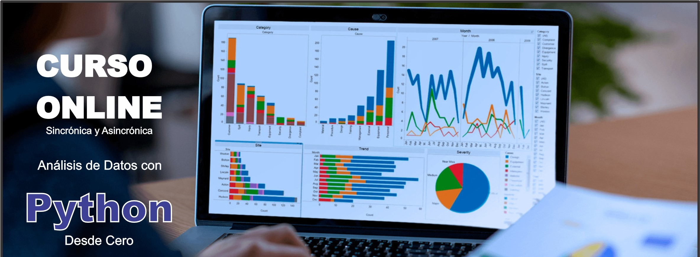

✅ INSCRIPCIÓN : https://forms.gle/rHj7KsVs2YqAy2zz6
✅ Costo Total: 350.000gs
Incluyen: Materiales + Grabaciones + Certificado
✅ Hora: 19:00 a 21.30hs.
✅ Inicio: Jueves 10 de octubre (6 sesiones)
"Descuento especial para grupos de 2 o más personas"
- 2 pers. 300mil c/u
- 3 pers. 250mil c/u
- 4 pers. o más 200mil c/u
✅ Formas de Pago:
Transf. bancaria:
Banco Itaú
Cuenta N° 720005407
Titular: Oscar González Frutos
CI: 3584172
Giros Tigo:
0983 352 932
✅ Enviar comprobante aquí.
✅ Escribir al WhatsApp: https://wa.me/595983352932
DOCENTE: Oscar González Frutos
Sesión 1: Introducción a Python y Herramientas para Análisis de Datos
- Objetivos: Entender las bases de Python y cómo usarlo en análisis de datos. Configurar el entorno de trabajo con las bibliotecas necesarias.
- Temas:
- Breve repaso de Python: Tipos de datos, operadores, estructuras de control.
- Instalación de bibliotecas para análisis de datos: NumPy, Pandas, Matplotlib.
- Introducción a Jupyter Notebooks.
- Ejercicio práctico: Instalar y configurar el entorno de trabajo (Jupyter Notebooks, NumPy, Pandas).
Sesión 2: Manipulación de Datos con Pandas
- Objetivos: Aprender a cargar, inspeccionar y manipular datasets con Pandas.
- Temas:
- Introducción a Pandas y su estructura fundamental: DataFrame.
- Lectura de archivos CSV, Excel, SQL, etc.
- Operaciones básicas: Selección de columnas y filas, filtros, descripciones estadísticas.
- Limpieza de datos: Manejo de valores nulos, duplicados y formateo de datos.
- Ejercicio práctico: Cargar un dataset CSV y realizar análisis exploratorio (filtrado, resumen estadístico, limpieza).
Sesión 3: Análisis Numérico con NumPy
- Objetivos: Trabajar con datos numéricos eficientemente usando NumPy.
- Temas:
- Introducción a NumPy: Arrays y sus ventajas.
- Operaciones matemáticas básicas y avanzadas con arrays.
- Estadísticas descriptivas con NumPy.
- Manipulación de arrays: Indexación, slicing, y transformaciones.
- Ejercicio práctico: Crear arrays de datos numéricos y realizar operaciones estadísticas simples.
Sesión 4: Visualización de Datos con Matplotlib y Seaborn
- Objetivos: Visualizar y comunicar datos de manera efectiva.
- Temas:
- Introducción a la visualización de datos: Importancia y tipos de gráficos.
- Creación de gráficos básicos con Matplotlib (líneas, barras, dispersión).
- Visualización avanzada con Seaborn: Mapas de calor, gráficos de distribución y box plots.
- Personalización de gráficos (etiquetas, colores, estilos).
- Ejercicio práctico: Visualizar los datos de un dataset con gráficos de barras, líneas y dispersión, interpretando los resultados.
Sesión 5: Análisis de Datos con Estadística Descriptiva
- Objetivos: Realizar análisis descriptivo de datos para obtener insights.
- Temas:
- Introducción a la estadística descriptiva: Media, mediana, moda, desviación estándar.
- Agrupación y agregación de datos con Pandas.
- Identificación de correlaciones entre variables.
- Análisis de distribuciones.
- Ejercicio práctico: Realizar un análisis estadístico descriptivo de un dataset para identificar patrones y tendencias.
Sesión 6: Proyecto Final – Análisis Completo de un Dataset
- Objetivos: Aplicar todo lo aprendido en un proyecto final.
- Temas:
- Carga y limpieza de un dataset.
- Exploración de los datos y análisis estadístico.
- Creación de visualizaciones para comunicar los resultados.
- Interpretación y presentación de insights clave.
- Ejercicio práctico: Seleccionar un dataset y realizar un análisis completo, desde la limpieza de datos hasta la creación de gráficos y conclusiones.